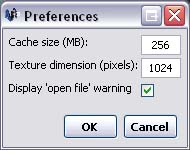

Files types are limited to:

Displays a standard windows dialogue box for opening files.
Files types are limited to:
Closes the currently open image.

Toggles the main Image Window which displays the satellite imagery.
(Only available when an image is open).
Toggles the Tools Window which contains.
(Only available when an image is open).

Toggles the ROI creation Window.
(Only available when an image is open).
Toggles the Contrast Stretch options window for adjusting the brightness and contrast of the displayed satellite
images. For display purposes only and does not alter image data.
(Only available when an image is open).
Resets the layout of all the windows to the default locations and size.
Toggles the preferences window used for setting:

Launches this User Manual.
Displays information about Parbat3D.